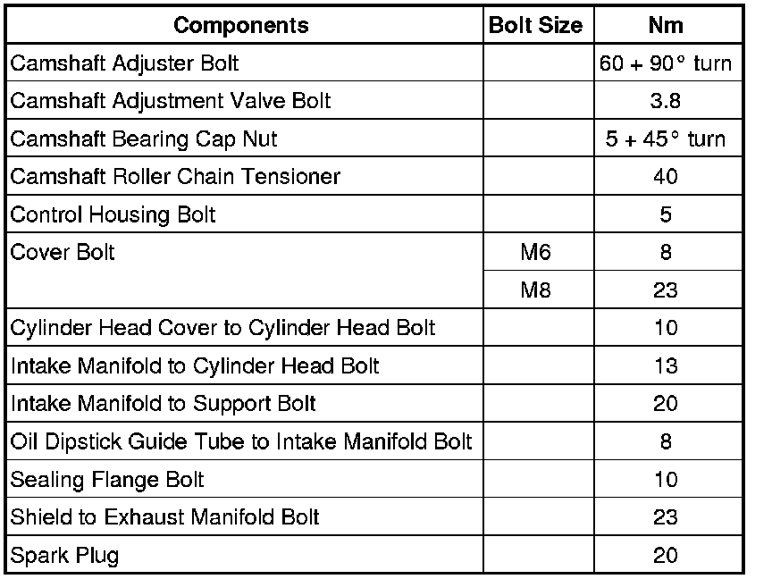

System Specifications
Fastener Tightening Specifications

Cylinder Head Bolt Tightening Sequence

• The longer cylinder head bolts must be inserted in the middle holes of cylinder head.
- Tighten cylinder head bolts in tightening sequence from inside to outside.
- Tighten all bolts to 30 Nm.
- Then tighten bolts to 50 Nm.
- Tighten all bolts (1/4 turn) (90°) further using a ratchet.
- Afterwards, tighten all bolts again 1/4 turn (90°) further